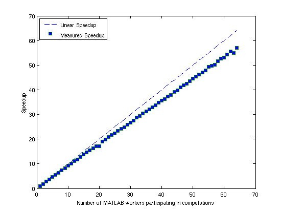
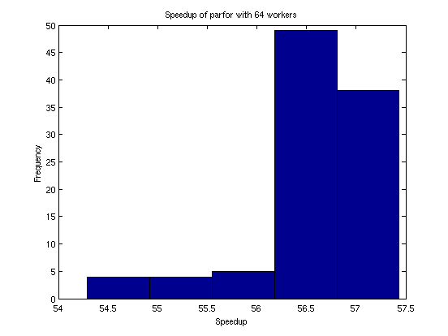

Simple Benchmarking of Parfor Using Blackjack
This demo benchmarks the parfor construct by repeatedly playing the card game of blackjack, also known as 21. We use parfor to play the card game multiple times in parallel, varying the number of MATLAB® workers, but always using the same number of players and hands.
Related demos:
Contents
Parallel Version
The basic parallel algorithm uses the parfor construct to execute independent passes through a loop. It is a part of the MATLAB® language, but behaves essentially like a regular for-loop if you do not have access to the Parallel Computing Toolbox™ product. Thus, our initial step is to convert a loop of the form
for i = 1:numPlayers
S(:, i) = playBlackjack();
endinto the equivalent parfor loop:
parfor i = 1:numPlayers
S(:, i) = playBlackjack();
endWe modify this slightly by specifying an optional argument to parfor, instructing it to limit to n the number of workers it uses for the computations. The actual code is as follows:
dbtype pctdemo_aux_parforbench
1 function S = pctdemo_aux_parforbench(numHands, numPlayers, n) 2 %PCTDEMO_AUX_PARFORBENCH Use parfor to play blackjack. 3 % S = pctdemo_aux_parforbench(numHands, numPlayers, n) plays 4 % numHands hands of blackjack numPlayers times, and uses no 5 % more than n MATLAB(R) workers for the computations. 6 7 % Copyright 2007-2009 The MathWorks, Inc. 8 9 S = zeros(numHands, numPlayers); 10 parfor (i = 1:numPlayers, n) 11 S(:, i) = pctdemo_task_blackjack(numHands, 1); 12 end
Check the Status of the MATLAB® Pool
We will use the MATLAB® pool to allow the body of the parfor loop to run in parallel, so we start by checking whether the pool is open. We will then run the benchmark using anywhere between 2 and poolSize workers from this pool.
poolSize = matlabpool('size'); if poolSize == 0 error('distcomp:demo:poolClosed', ... 'This demo needs an open MATLAB pool to run.'); end
Run the Benchmark: Weak Scaling
We time the execution of our benchmark calculations using 2 to poolSize workers. We use weak scaling, that is, we increase the problem size with the number of workers.
numHands = 2000; numPlayers = 6; fprintf('Simulating each player playing %d hands.\n', numHands); t1 = zeros(1, poolSize); for n = 2:poolSize tic; pctdemo_aux_parforbench(numHands, n*numPlayers, n); t1(n) = toc; fprintf('%d workers simulated %d players in %3.2f seconds.\n', ... n, n*numPlayers, t1(n)); end
Simulating each player playing 2000 hands. 2 workers simulated 12 players in 6.11 seconds. 3 workers simulated 18 players in 6.06 seconds. 4 workers simulated 24 players in 6.10 seconds. 5 workers simulated 30 players in 6.11 seconds. 6 workers simulated 36 players in 6.17 seconds. 7 workers simulated 42 players in 6.12 seconds. 8 workers simulated 48 players in 6.10 seconds. 9 workers simulated 54 players in 6.08 seconds. 10 workers simulated 60 players in 6.10 seconds. 11 workers simulated 66 players in 6.08 seconds. 12 workers simulated 72 players in 6.06 seconds. 13 workers simulated 78 players in 6.17 seconds. 14 workers simulated 84 players in 6.14 seconds. 15 workers simulated 90 players in 6.11 seconds. 16 workers simulated 96 players in 6.16 seconds. 17 workers simulated 102 players in 6.16 seconds. 18 workers simulated 108 players in 6.17 seconds. 19 workers simulated 114 players in 6.21 seconds. 20 workers simulated 120 players in 6.50 seconds. 21 workers simulated 126 players in 6.21 seconds. 22 workers simulated 132 players in 6.18 seconds. 23 workers simulated 138 players in 6.18 seconds. 24 workers simulated 144 players in 6.22 seconds. 25 workers simulated 150 players in 6.27 seconds. 26 workers simulated 156 players in 6.24 seconds. 27 workers simulated 162 players in 6.24 seconds. 28 workers simulated 168 players in 6.32 seconds. 29 workers simulated 174 players in 6.30 seconds. 30 workers simulated 180 players in 6.30 seconds. 31 workers simulated 186 players in 6.33 seconds. 32 workers simulated 192 players in 6.23 seconds. 33 workers simulated 198 players in 6.30 seconds. 34 workers simulated 204 players in 6.27 seconds. 35 workers simulated 210 players in 6.28 seconds. 36 workers simulated 216 players in 6.29 seconds. 37 workers simulated 222 players in 6.28 seconds. 38 workers simulated 228 players in 6.30 seconds. 39 workers simulated 234 players in 6.28 seconds. 40 workers simulated 240 players in 6.28 seconds. 41 workers simulated 246 players in 6.32 seconds. 42 workers simulated 252 players in 6.30 seconds. 43 workers simulated 258 players in 6.36 seconds. 44 workers simulated 264 players in 6.30 seconds. 45 workers simulated 270 players in 6.32 seconds. 46 workers simulated 276 players in 6.27 seconds. 47 workers simulated 282 players in 6.28 seconds. 48 workers simulated 288 players in 6.33 seconds. 49 workers simulated 294 players in 6.29 seconds. 50 workers simulated 300 players in 6.28 seconds. 51 workers simulated 306 players in 6.28 seconds. 52 workers simulated 312 players in 6.29 seconds. 53 workers simulated 318 players in 6.31 seconds. 54 workers simulated 324 players in 6.30 seconds. 55 workers simulated 330 players in 6.25 seconds. 56 workers simulated 336 players in 6.29 seconds. 57 workers simulated 342 players in 6.36 seconds. 58 workers simulated 348 players in 6.29 seconds. 59 workers simulated 354 players in 6.28 seconds. 60 workers simulated 360 players in 6.33 seconds. 61 workers simulated 366 players in 6.29 seconds. 62 workers simulated 372 players in 6.26 seconds. 63 workers simulated 378 players in 6.42 seconds. 64 workers simulated 384 players in 6.29 seconds.
We compare this against the execution using a regular for-loop in MATLAB®.
tic;
S = zeros(numHands, numPlayers);
for i = 1:numPlayers
S(:, i) = pctdemo_task_blackjack(numHands, 1);
end
t1(1) = toc;
fprintf('Ran in %3.2f seconds using a sequential for-loop.\n', t1(1));
Ran in 5.60 seconds using a sequential for-loop.
Plot the Speedup
We compare the speedup using parfor with different numbers of workers to the perfectly linear speedup curve. The speedup achieved by using parfor depends on the problem size as well as the underlying hardware and networking infrastructure.
speedup = (1:poolSize).*t1(1)./t1; fig = pctdemo_setup_blackjack(1.0); set(fig, 'Visible', 'on'); ax = axes('parent', fig); x = plot(ax, 1:poolSize, 1:poolSize, '--', ... 1:poolSize, speedup, 's', 'MarkerFaceColor', 'b'); t = get(ax, 'XTick'); t(t ~= round(t)) = []; % Remove all non-integer x-axis ticks. set(ax, 'XTick', t); legend(x, 'Linear Speedup', 'Measured Speedup', 'Location', 'NorthWest'); xlabel(ax, 'Number of MATLAB workers participating in computations'); ylabel(ax, 'Speedup');
Measure the Speedup Distribution
To get reliable benchmark numbers, we need to run the benchmark multiple times. We therefore run the benchmark multiple times for poolSize workers to allow us to look at the spread of the speedup.
numIter = 100; t2 = zeros(1, numIter); for i = 1:numIter tic; pctdemo_aux_parforbench(numHands, poolSize*numPlayers, poolSize); t2(i) = toc; end
Plot the Speedup Distribution
We take a close look at the speedup of our simple parallel program when using the maximum number of workers. The histogram of the speedup allows us to distinguish between outliers and the average speedup.
speedup = t1(1)./t2*poolSize; clf(fig); ax = axes('parent', fig); hist(speedup, 5); a = axis(ax); a(4) = 5*ceil(a(4)/5); % Round y-axis to nearest multiple of 5. axis(ax, a) xlabel(ax, 'Speedup'); ylabel(ax, 'Frequency'); title(ax, sprintf('Speedup of parfor with %d workers', poolSize)); m = median(speedup); fprintf(['Median speedup is %3.2f, which corresponds to '... 'efficiency of %3.2f.\n'], m, m/poolSize);
Median speedup is 56.61, which corresponds to efficiency of 0.88.